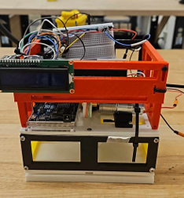
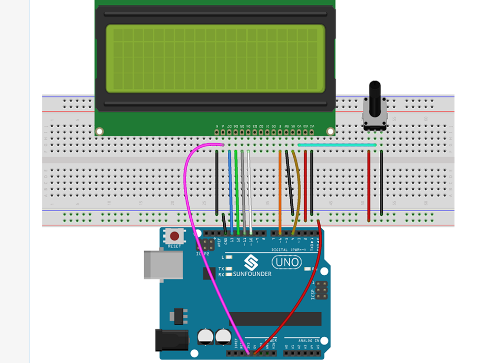
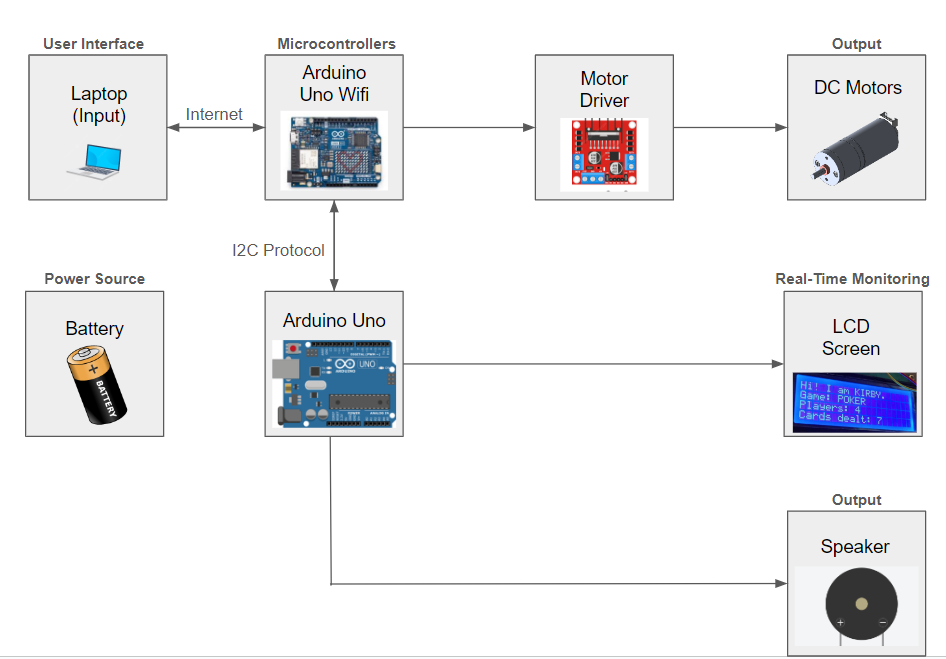

A semi-automatic card dealer machine featuring a speaker, LCD screen, and DC motor. Utilized an Arduino Uno R4 Wifi model containing ESP32 module to control the overall system. Other parts of the design were 3D printed and wired using a breadboard.
The objective of this project was to learn how to create a fully embedded system using the Arduino Uno R4 module, equipped with Wifi capabilities. Since a truly embedded system only should have one main purpose, the end goal of this project was to design a prototype that can deal equal amounts of cards to multiple people for various card games, based on the user input.


The overall structure was designed using SolidWorks and 3D printed in PLA material. The 3D printed parts were fastened using 3 mm bolts to keep the design sturdy while being able to enclose the majority of the design - the breadboard, Arduino module, deck of cards, DC motor, motor driver, and all the wiring. The LCD panel and speaker were attached to the side of the structure for easier access. The Arduino module, powered by 2 AA batteries, is connected to the motor driver to control the DC motor, LCD screen, and speaker. The DC motor is attached to a wheel that slips and launches cards at the top of the card deck. Since DC motors move continuously, the motor driver turns on the DC for 300 ms to allow exactly 1 card to be launched at a time. This result was derived by multiple trials and testing. Throughout the dealing phase, the LCD panel displays the status of dealing out the cards, while the speaker plays the Kirby theme song (as the name of the project implies). To enhance user experience and interface, the Arduino module was designed to connect to external devices via Wifi. This was done by hosting an html website through the .ino file using the built-in Wifi feature of the Arduino Uno R4 Wifi module.
The overall algorithm is maintained by a finite state machine in 4 different states: Standby, Calculation, Dealing, and Termination. Standby state is when KIRBY is waiting for user inputs. During calculation stat, KIRBY sends inputs to Arduino to calculate the necessary turn angles and motor speeds based on the user input. During the dealing phase, the DC motors are activated through the motor driver to deal out cards while the LCD visualizes the process. Lastly, after dealing all cards or when Emergency stop is initiated by the user, KIRBY enters the termination state and returns to Standby state.